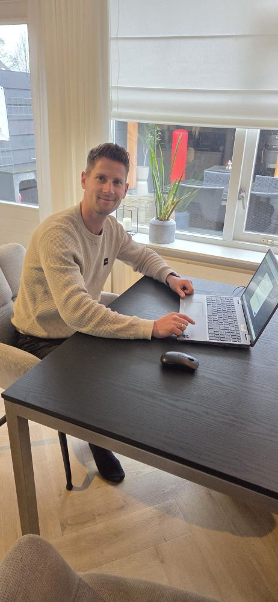

Heeft u een nieuwe computer of laptop gekocht? Gefeliciteerd! Niets is fijner dan een snelle start. Ik zorg ervoor dat uw nieuwe apparaat direct klaar is voor gebruik, met al uw vertrouwde bestanden op de juiste plek.

Wat ik voor u doe:
- Uw nieuwe Windows PC of laptop volledig installeren en updaten.
- Documenten, foto's en e-mails veilig overzetten van uw oude apparaat.
- Belangrijke software installeren (zoals Office, virusscanner en uw browser).
- Uw printer en WiFi direct koppelen zodat u meteen aan de slag kunt.